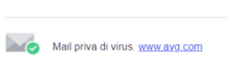

AV Evasion
Some Tactics:•
Ghost Writing: altering the malicious executable in a disassembler or
hex editor with innocuous machine language instructions(like NOPs instructions) that preserve the behavior of the
file but alter the file contents so that it doesn't match antivirus signatures.
•
Encoding\encrypting the malware so it does not match signatures: the
malicious executable can be encoded or encrypted and then applying a decoding/decrypting header in front of
it
•
Fileless Malware: the malware is directly loaded into
memory without rely on files and because of that it does not leave footprints.
Without an executable, there is
no signature for antivirus software to detect and remove.
Usually the initial payload file is often a small
script that trigger a chain of malware downloads that will be hard to detect because they run in memory(like in
Powershell)
•
Custom compile the malware: by custom compiling
the malware and choosing different instructions and different compiler options, the resulting malware likely
won't match the antivirus signature
Approach for evading AV(Antivirus)
•
In a penetration test, we don not need to evade every possible AV product, we need to evade only the one(or two)
used by the target organization!
• To determine the antivirus used by the target organization we can:
◇
emails footers that proclaims the antivirus product that scanned files attachments with the email
 ◇
DNS
cache snooping (this is instead the module
cache_snoop
of Recon-ng)
◇ Simply ask to the the target organization's employees
VirusTotal.com
and other online Virus Scanners Virustotal.com lets you scan uploaded files with more than 50
different AV engines
• Note that Virustotal will share the received samples with the antivirus vendors who
participate in its service
This can be counterproductive for pen testers because Vendors can then create a
signature and block that file from executing going forward, which could severely limit your penetration test in the
next future
• with virustotal.com, so you can send also only
the hash of the file (instead of the file itself) to see if
it matches the hashes of any known malware. Also if the hash may not be detected, while your malware might be
detected
There are also other online scanners, some of which have a policy of NOT sharing with antivirus
vendors the received samples
These smaller sites unfortunately tend to appear and then disappear
frequently
Because of that is better buying a copy of the target's Antivirus tool and run it in our
lab
To know more:•
https://wikileaks.org/ciav7p1/cms/files/BypassAVDynamics.pdf